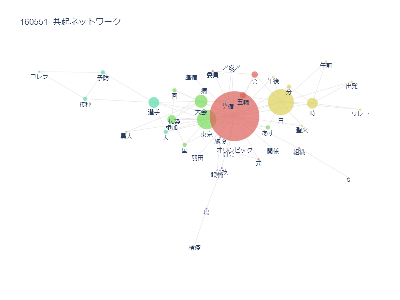
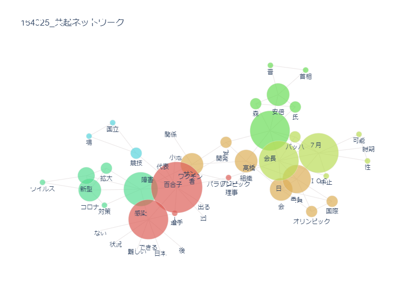
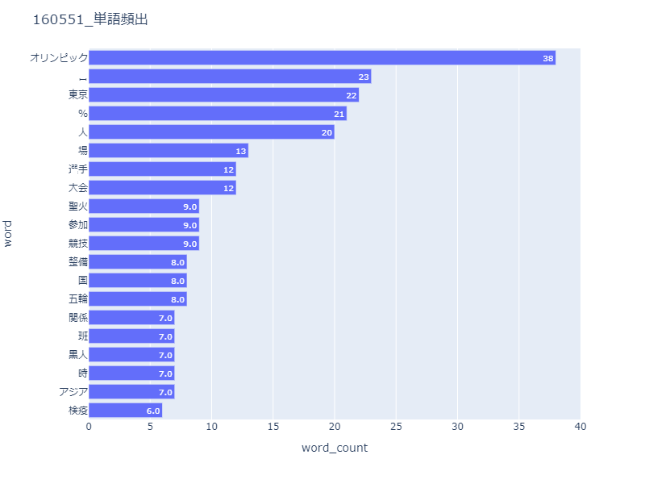
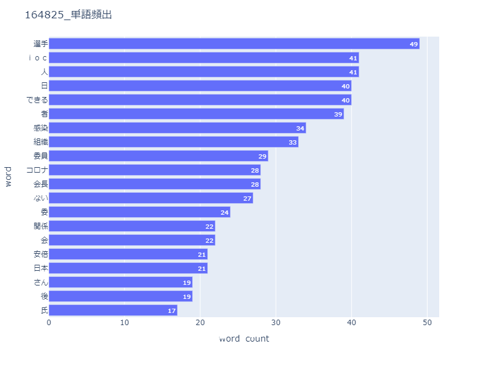
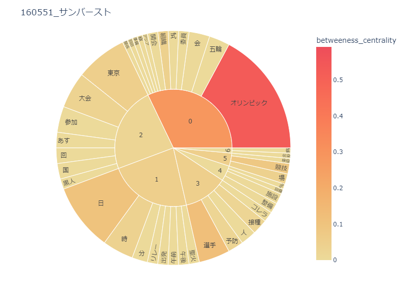
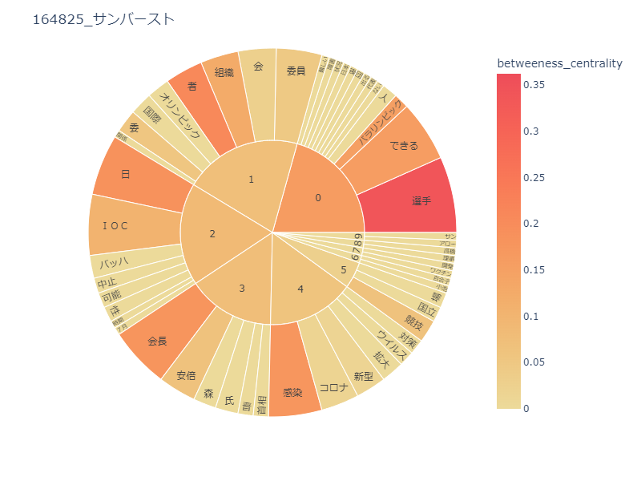

ホーム
デザイン演習Ⅰ・Ⅱ
デザイン演習 データサイエンス（テキストマイニング）
今回は、二つの東京オリンピック（1964年･2020-1年）について新聞記事データを収集し、
共起ネットワークを使って、社会がどのように変化したか分析するという課題を行う。
まず、1964年と2020-1年の共起ネットワークを見てみる。
 
左の画像が1964年、右の画像が2020-1年の共起ネットワークである。
1964年はコレラ、2020-1年はコロナとウイルスの面で共通点が見られる。
また、2020-1年には「安倍」「百合子」「森」といった政治家の名前が出ているのに対して、
1964年は出ていないことから、2020-1年はより政治色が強まったオリンピックといえる。
次に、1964年と2020-1年の単語頻出を見てみる。
 
左の画像が1964年、右の画像が2020-1年の単語頻出である。
1964年は「オリンピック」という大会全体が注目されているのに対して、2020-1年は「選手」が再頻出であることから、より個人に焦点が当てられていたといえる。
また、ウイルスに関連した単語を見ると、1964年は「検疫」１つだけに対し、2020-1年は「できる」「感染」「コロナ」「ない」の4つがある。
そのことから、よりウイルスに注目されたのは、2020-1年のオリンピックであったといえる。
最後に、1964年と2020-1年のサンバーストを見てみる。
 
左の画像が1964年、右の画像が2020-1年のサンバーストである。
単語頻出同様、1964年は「オリンピック」という大会全体が注目されているのに対して、2020-1年はより選手個人に焦点が当てられていたといえる。
また、1964年には出てこない「パラリンピック」が2020-1年に出ていることから、障害を持っている人への理解が進んできたのではないかと考えた。